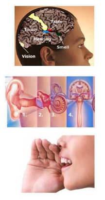
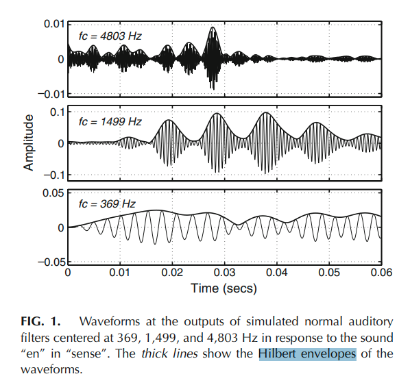
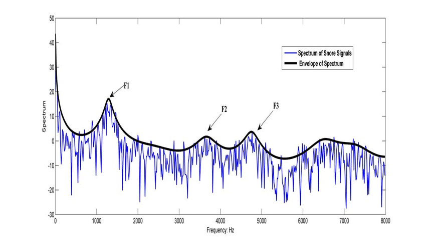

9. ¿Sistema auditivo humano: pasivo o activo?#
{kind=link}
Durante muchos años se pensó que el sistema auditivo era pasivo.
Sin embargo, cuando existen factores cognitivos activos se posibilita el control sobre objetos auditivos.

Todo esto es posible debido a que nuestro sistema auditivo
extraemúltiples características ofeaturesdelpaisaje sonoro.
Features podrían presentarse como:
ritmo,timbre,pitcho altura tonal (bajo, medio alto),localización(arriba, abajo, izquierda, derecha),duración,onset y offset.
Estos features permiten que separemos en transmisiones individuales sonidos como por ejemplo, una melodía, una voz, una guitarra.
La percepción auditiva es un canal de transmisión con capacidad limitada para contener información. Puede codificar datos y transmitirlos pero en cantidades finitas de información por período de tiempo.
{kind=link}
La Cóclea o caracol:

Debido a la
Transformada de Fourier, los sonidos (señales) variables en el tiempo se descomponen en una suma de senoidales cada una de frecuencias distintas.
Este Transformación (tiempo - frecuencia) es muy relevante para entender la audición y la percepicón auditiva.
El sistema auditivo periférico interno (cóclea) realiza una
especie de transformada de Fouriermecánica. Esta consiste en un mapeo de frecuencias a lo largo de la cóclea.
 Otra perspectiva de importancia en el sistema auditivo interno es la
Transformada Hilbertque considera al sonido como el resultado de una multiplicación entre dos envolventes: la primera es unaenvolventedel sonido que varía muy lentamente en frecuencia y la segunda, es unaestructura finaque varía muy rápidamente.
{kind=link}
{kind=link}
{kind=link}